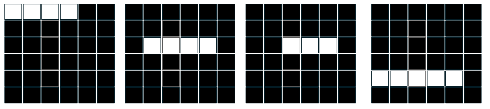
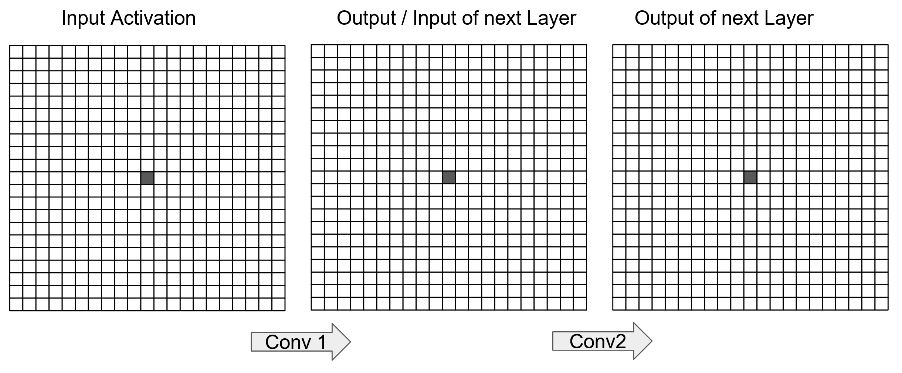
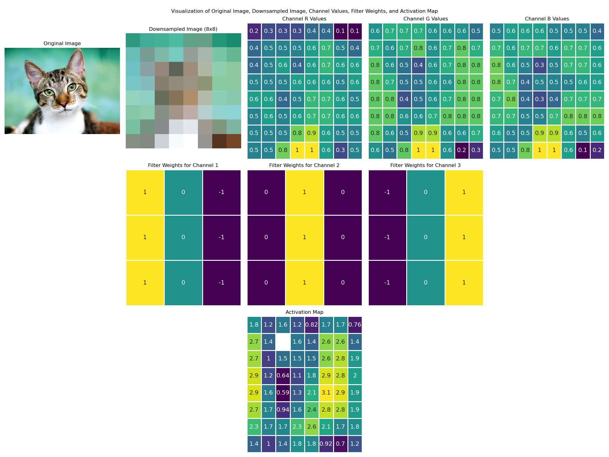
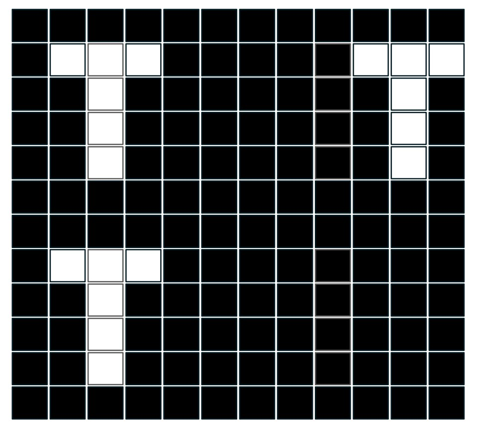

torch.nn.Conv2d(
in_channels, out_channels, kernel_size,
stride=1, padding=0, dilation=1,
groups=1, bias=True, padding_mode='zeros')
torch.nn.MaxPool2d(kernel_size, stride=None, padding=0, dilation=1)
torch.nn.ConvTranspose2d(
in_channels, out_channels, kernel_size,
stride=1, padding=0, output_padding=0,
groups=1, bias=True, dilation=1,
padding_mode='zeros')Quiz & Exam Prep
1 Allgemeine Informationen
Die folgenden Fragen helfen das gelernte nochmal zu überprüfen und könnten Prüfungsfragen sein.
Typischerweise gibt es an der Prüfung jedoch Multiple-Choice Fragen.
An der Prüfung wird nur Wissen abgefragt, welches im Unterricht vorgestellt und/oder diskutiert worden ist.
Beachten Sie auch die Quiz-Fragen in den Unerrichtsunterlagen.
Die gelisteten Operationen sind mit folgenden (default) Parametern definiert:
Falls nichts anderes erwähnt, ist als Tensor-Format folgendes anzunehmen: \(N \times C \times H \times W\), oder \(C \times H \times W\). \(N\) ist die Batch-Size, \(C\) die Anzahl Channels, \(H\) die Höhe und \(W\) die Breite.
2 Quiz & Prüfungsfragen
2.1 Intro
- Inwiefern definiert das Semantic Gap eine grundsätzliche Herausforderung in Computer Vision?
NoteAntwort
Das Semantic Gap beschreibt die Diskrepanz oder enorme kognitive Leistung um die Pixelrepräsentation von Bildern (2-D Gitter von Pixel-Werte) semantisch zu interpretieren. Also von Pixeln auf Katzen zu schliessen!
Diese fundamentale Herausforderung macht Computer Vision grundsätzlich schwierig. Deep Learning hilft, diese Lücke zu überbrücken, indem es hierarchische Repräsentationen lernt, die schrittweise von lokalen Features (Kanten, Farben) zu hochdimensionalen semantischen Konzepten (Objekte, Szenen) zusammengeführt werden.
- Sie möchten ein Objekt in einem Bild klassifizieren: Ist es besser das ganze Bild zur Verfügung zu haben oder nur einen Ausschnitt vom Objekt? Begründen Sie.
NoteAntwort
Das hängt vom Anwendungsfall ab
Vorteile ganzes Bild:
- Kontextinformationen sind verfügbar (z.B. Umgebung hilft bei Klassifikation)
- Räumliche Beziehungen zu anderen Objekten können genutzt werden
Vorteile eines Ausschnitts:
- Fokus auf das relevante Objekt, weniger Ablenkung durch Hintergrund
- Objekt nimmt mehr Pixel ein → mehr Details sichtbar (je nach Architektur)
Empfehlung: In der Regel ist das ganze Bild vorzuziehen, da Kontext wichtig ist.
2.2 Modellierung von Bildern mit Neuronalen Netzwerken
- Sie möchten ein Multilayer Perceptron (MLP) auf Bilddaten trainieren. Die Bilder haben jedoch unterschiedliche räumliche Auflösungen, die von \(64 \times 64\) bis zu \(512 \times 512\) reichen. Ist das ein Problem? Wenn ja, was tun Sie?
NoteAntwort
Ja, das ist ein Problem.
MLPs erwarten eine fixe Input-Dimensionalität. Ein Bild mit \(64 \times 64 \times 3 = 12{,}288\) Pixeln ergibt einen anderen Input-Vektor als ein Bild mit \(512 \times 512 \times 3 = 786{,}432\) Pixeln.
Lösungen:
- Resizing: Alle Bilder auf eine einheitliche Auflösung skalieren (z.B. \(224 \times 224\))
- Cropping: Zentrale Crops oder Random Crops auf einheitliche Grösse
- Sie möchten ein MLP auf Bildern mit einer Input Dimensionalität von \(3 \times 16 \times 16\) (CHW) trainieren. Der erste Hidden Layer hat 4 Neuronen, der Output Layer 2. Wie viele Gewichte hat Ihr Modell? Wie viele, wenn sich die räumliche Auflösung auf \(32 \times 32\) verdoppelt?
NoteAntwort
Berechnung für \(16 \times 16\):
- Input: \(3 \times 16 \times 16 = 768\) Input Neuronen
- Hidden Layer: 4 Neuronen
- Output Layer: 2 Neuronen
Gewichte:
- Input → Hidden: \(768 \times 4 = 3{,}072\) Gewichte (+ 4 Bias)
- Hidden → Output: \(4 \times 2 = 8\) Gewichte (+ 2 Bias)
- Total: 3,086 Parameter
Berechnung für \(32 \times 32\):
- Input: \(3 \times 32 \times 32 = 3{,}072\) Neuronen
- Input → Hidden: \(3{,}072 \times 4 = 12{,}288\) Gewichte (+ 4 Bias)
- Hidden → Output: \(4 \times 2 = 8\) Gewichte (+ 2 Bias)
- Total: 12,302 Parameter
Die Anzahl der Parameter vervierfacht sich! Dies zeigt, warum MLPs nicht gut für Bilder skalieren.
- Sie möchten ein neuronales Netzwerk lernen, das alle Bilder mit einem vertikalen Balken mit vier Pixeln (wobei jeder dieser vier Pixel einen hohe, identischen Wert hat), siehe erste zwei Bilder in Figure 1. Es muss in der Lage sein, zwischen Bildern zu unterscheiden, die ein anderes Muster haben (z.B. drittes und viertes Bild in Figure 1). Wie viele Neuronen benötigen Sie mindestens in einem Netzwerk mit einem Hidden Layer?

NoteAntwort
Mindestens 3 Neuronen pro Zeile im Hidden Layer. Also 3x6=18.
Begründung:
- Mit einem Neuron kann ein Muster erkannt werden, z.B. hohe Gewichte auf Muster-Positionen und negative auf restlichen. Falls Muster -> Aktivierung positiv, sonst negativ oder 0.
- Jede Gruppe von 3 Neuronen kann lernen, eine bestimmte vertikale Position (pro Zeile) zu detektieren (es gibt davon jeweils 3)
- Dies muss dann noch pro Zeile gemacht werden (6 Zeilen).
Alternativ: Mit geschickter Gewichtswahl könnten allenfalls auch weniger Neuronen ausreichen, aber 36 ist eine sichere praktische Antwort.
- Ihr Kollege ist am verzweifeln. Sein MLP funktioniert nicht sehr gut. Das kann natürlich viele Gründe haben. Nachdem Sie jedoch seinen Code angeschaut haben, haben Sie einen Verdacht. Welcher?
class MLP(nn.Module):
def __init__(self, input_size, hidden_size1, hidden_size2, hidden_size3, output_size):
super(MLP, self).__init__()
self.fc1 = nn.Linear(input_size, hidden_size1)
self.fc2 = nn.Linear(hidden_size1, hidden_size2)
self.fc3 = nn.Linear(hidden_size2, hidden_size3)
self.fc4 = nn.Linear(hidden_size3, output_size)
def forward(self, x):
x = self.fc1(x)
x = self.fc2(x)
x = self.fc3(x)
x = self.fc4(x)
return x
NoteAntwort
Das Problem: Fehlende Aktivierungsfunktionen.
Das Netzwerk besteht nur aus linearen Transformationen. Ohne nichtlineare Aktivierungsfunktionen (wie ReLU, Sigmoid, Tanh) kann das Netzwerk nur lineare Funktionen lernen - egal wie viele Layer es hat.
Mathematisch: Die Komposition mehrerer linearer Funktionen ist wieder eine lineare Funktion: \[f_4(f_3(f_2(f_1(\vec{x})))) = W_4 W_3 W_2 W_1 x = W_{\text{combined}} \vec{x}\]
Das Netzwerk ist also äquivalent zu einem einzigen linearen Layer!
Lösung:
def forward(self, x):
x = F.relu(self.fc1(x))
x = F.relu(self.fc2(x))
x = F.relu(self.fc3(x))
x = self.fc4(x) # Kein ReLU vor dem Output
return x2.3 Convolutional Neural Networks (CNNs)
- Ein Convolutional Layer hat 64 Input Activations (\(C_{in} = 64\) und \(H=16\), \(W=16\)). Sie möchten die räumliche Dimensionierung um die Hälfte reduzieren, während Sie die Anzahl der Channels verdoppeln. Wie parametrisieren Sie Ihren Convolutional Layer? Geben Sie ein Beispiel an. Wieviele Gewichte müssen gelernt werden?
NoteAntwort
Ziel: \(64 \times 16 \times 16 \rightarrow 128 \times 8 \times 8\)
Parametrisierung:
nn.Conv2d(in_channels=64, out_channels=128, kernel_size=3, stride=2, padding=1)Begründung:
out_channels=128: Verdoppelt die Channels von 64 auf 128stride=2: Halbiert räumliche Auflösung (16 → 8)kernel_size=3, padding=1: Erhält kompatible Dimensionen
Gewichte:
- Pro Filter: \(64 \times 3 \times 3 = 576\) Gewichte
- Anzahl Filter: 128
- Total: \(128 \times 576 = 73{,}728\) Gewichte
- Plus 128 Bias-Parameter: 73,856 Parameter
- Sie möchten ein CNN auf Bildern mit einer Input Dimensionalität von \(3 \times 16 \times 16\) (CHW) trainieren. Sie verwenden 3 Convolutional Layer mit je 8 Filtern und Kernel-Size 3. Wie viele Gewichte haben ihre Convolutional Layers ingesamt? Wie viele, wenn sich die räumliche Auflösung der Bilder auf \(32 \times 32\) verdoppelt?
NoteAntwort
Wichtig: Die Anzahl der Gewichte in Convolutional Layers hängt NICHT von der räumlichen Auflösung ab!
Berechnung:
- Layer 1: \(3 \times 3 \times 3 \times 8 = 216\) Gewichte (+ 8 Bias)
- Layer 2: \(8 \times 3 \times 3 \times 8 = 576\) Gewichte (+ 8 Bias)
- Layer 3: \(8 \times 3 \times 3 \times 8 = 576\) Gewichte (+ 8 Bias)
- Total: 1,392 Parameter
Bei \(32 \times 32\):
- Immer noch 1,392 Parameter!
Dies ist ein Hauptvorteil von CNNs: Parameter Sharing macht sie unabhängig von der Bildgrösse (im Gegensatz zu MLPs).
- Sie haben sehr grosse Bilder (\(8000 \times 8000\) Pixel). Ihr Modell stürzt ständig mit Out-Of-Memory Fehlern ab. Warum könnte das so sein? Welche Optionen haben Sie bei der Parametrisierung Ihrer Convolutions um die Out-Of-Memory Fehler zu umgehen?
NoteAntwort
Ursache: Grosse Bilder erzeugen riesige Activation Maps, die viel GPU-Memory benötigen.
Lösungen:
- Grösserer Stride in frühen Layern:
stride=2oderstride=4reduziert Auflösung schnell- Beispiel: \(8000 \times 8000 \xrightarrow{\text{stride=4}} 2000 \times 2000\)
- Aggressive Pooling:
nn.MaxPool2d(kernel_size=4, stride=4)früh einsetzen
- Kleinere Batch Size:
- Batch size = 1 statt 32 (weniger parallel)
- Weniger Filter in frühen Layern:
- Statt 64 nur 32 oder 16 Filter verwenden
- Image Resizing vor dem Modell:
- Bilder auf z.B. \(2000 \times 2000\) downsamplen
- Kleinere Filter aber mit Dilated Convolutions:
- Grösseres receptive field ohne mehr Parameter
- Können CNNs verwendet werden, um Inputs wie z.B. Satellitendaten zu modellieren, die keine RGB-Bilder sind, d.h. mehr als 3 Channels haben? Begründen Sie Ihre Antwort.
NoteAntwort
Ja, absolut!. CNNs können beliebig viele Input-Channels verarbeiten.
Begründung:
- Der erste Conv-Layer spezifiziert
in_channels- dies kann jede Zahl sein - Satellitendaten haben oft 10+ Bänder (multispektral, hyperspektral)
- Medizinische Bilder können mehrere Modalitäten kombinieren (CT + MRI)
Beispiel:
# Satellitendaten mit 12 Bändern
nn.Conv2d(in_channels=12, out_channels=64, kernel_size=3, padding=1)Vorteile:
- CNNs lernen automatisch relevante Kombinationen der Channels
- Räumliche Struktur bleibt erhalten (2D Convolutions)
- Gleiche Architektur-Prinzipien wie bei RGB
Hinweis: Bei Transfer Learning von ImageNet (3 Channels) muss der erste Layer angepasst werden!
- Sie möchten Bilder modellieren, die nicht quadratisch sind. Sie haben eine räumliche Auflösung von 800x400. Was ist bei einem CNN anders wenn es mit nicht quadratischen Bildern trainiert wird (im Vergleich zu quadratischen Bildern)?
NoteAntwort
Nichts Fundamentales! CNNs funktionieren auch mit nicht-quadratischen Bildern.
Unterschiede:
- Activation Maps bleiben nicht-quadratisch:
- Input \(800 \times 400\) → nach Conv mit stride=1, padding=1 immer noch \(800 \times 400\)
- Nach Pooling (2x2): \(400 \times 200\)
- Fully Connected Layer:
- FC Layer müssen die genaue Auflösung kennen
- Bei \(128 \times 8 \times 4\):
nn.Linear(128*8*4, num_classes)
- Global Pooling vorteilhaft:
nn.AdaptiveAvgPool2d((1,1))funktioniert unabhängig von Auflösung- Macht Modell flexibler für verschiedene Grössen
Kein Unterschied:
- Convolutions funktionieren identisch
- Receptive fields sind gleich
- Training-Algorithmus ist gleich
- Im obigen Beispiel mit Bildern mit einer räumlichen Auflösung von 800x400. Wenn Sie wirklich quadratische Activation Maps in Ihrem Modell haben wollten, wie könnten Sie dies mit dem ersten Convolutional Layer erreichen? Wie müssten Sie diesen parametrisieren? Konsultieren Sie bei Bedarf die PyTorch Dokumentation torch.nn.Conv2d.
NoteAntwort
Asymmetrische Stride-Parameter verwenden:
nn.Conv2d(
in_channels=3,
out_channels=64,
kernel_size=3,
stride=(2, 1), # Höhe um Faktor 2 reduzieren, Breite beibehalten
padding=1
)Berechnung:
- Input: \(800 \times 400\)
- Nach Conv mit
stride=(2, 1): \(400 \times 400\)
Alternative mit Pooling:
# Asymmetrisches Pooling
pool = nn.MaxPool2d(kernel_size=(2, 1), stride=(2, 1))- Wenn die Pixel Ihrer Input Bilder mit einer fixen Permutationsmatrix zufällig neu sortiert werden (jedes Bild wird identisch neu sortiert), bevorzugen Sie ein CNN oder ein MLP? Begründen Sie Ihre Antwort.
NoteAntwort
MLP ist vorzuziehen!
Begründung:
CNNs basieren auf räumlicher Lokalität:
- Convolutions nutzen aus, dass benachbarte Pixel zusammenhängen
- Nach zufälliger Permutation ist diese Struktur zerstört
- Ein 3×3 Filter würde auf räumlich nicht-zusammenhängende Pixel angewendet
- Der Hauptvorteil von CNNs (lokale Feature-Extraktion) geht verloren
MLPs behandeln alle Positionen gleich:
- MLPs haben keine Annahmen über räumliche Struktur
- Jedes Pixel wird unabhängig behandelt (volles weight sharing)
- Permutation ändert nur die Position im Eingangsvektor, nicht die Funktionsweise
- Schauen Sie sich das folgende CNN an. Können Sie die räumliche Auflösung der Bilder ableiten? Wenn ja, berechnen Sie diese. Wenn nein, begründen Sie.
class CNN1(nn.Module):
def __init__(self):
super(CNN1, self).__init__()
self.conv1 = nn.Conv2d(3, 16, kernel_size=3, stride=1, padding=1)
self.conv2 = nn.Conv2d(16, 32, kernel_size=3, stride=1, padding=1)
self.relu = nn.ReLU()
self.pool = nn.MaxPool2d(kernel_size=2, stride=2, padding=0)
self.fc = nn.Linear(32 * 8 * 8, 10)
def forward(self, x):
x = self.relu(self.conv1(x))
x = self.pool(x)
x = self.relu(self.conv2(x))
x = self.pool(x)
x = x.view(x.size(0), -1)
x = self.fc(x)
return x
NoteAntwort
Ja, die räumliche Auflösung kann berechnet werden
Rückwärts-Rechnung vom FC-Layer:
Der FC-Layer erwartet: 32 * 8 * 8 = 2048 Eingänge
Dies bedeutet nach 2× Pooling: \(32 \times 8 \times 8\)
Berechnung:
- Nach pool2: \(32 \times 8 \times 8\)
- Vor pool2 (nach conv2): \(32 \times 16 \times 16\) (Pooling halbiert)
- Nach pool1: \(16 \times 16 \times 16\)
- Vor pool1 (nach conv1): \(16 \times 32 \times 32\) (Pooling halbiert)
- Input: \(3 \times 32 \times 32\)
Antwort: Die Input-Bilder haben eine räumliche Auflösung von \(32 \times 32\)
- Schauen Sie sich die folgenden beiden CNNs an. Was sind die wichtigsten praktischen Unterschiede?
class CNN1(nn.Module):
def __init__(self):
super(CNN1, self).__init__()
self.conv1 = nn.Conv2d(3, 16, kernel_size=3, stride=1, padding=1)
self.conv2 = nn.Conv2d(16, 32, kernel_size=3, stride=1, padding=1)
self.relu = nn.ReLU()
self.pool = nn.MaxPool2d(kernel_size=2, stride=2, padding=0)
self.fc = nn.Linear(32 * 8 * 8, 10)
def forward(self, x):
x = self.relu(self.conv1(x))
x = self.pool(x)
x = self.relu(self.conv2(x))
x = self.pool(x)
x = x.view(x.size(0), -1)
x = self.fc(x)
return xclass CNN2(nn.Module):
def __init__(self):
super(CNN2, self).__init__()
self.conv1 = nn.Conv2d(3, 16, kernel_size=3, stride=1, padding=1)
self.conv2 = nn.Conv2d(16, 32, kernel_size=3, stride=1, padding=1)
self.relu = nn.ReLU()
self.pool = nn.MaxPool2d(kernel_size=2, stride=2, padding=0)
self.global_avg_pool = nn.AdaptiveAvgPool2d((1, 1))
self.fc = nn.Linear(32, 10)
def forward(self, x):
x = self.relu(self.conv1(x))
x = self.pool(x)
x = self.relu(self.conv2(x))
x = self.pool(x)
x = self.global_avg_pool(x)
x = x.view(x.size(0), -1)
x = self.fc(x)
return x
NoteAntwort
Hauptunterschied: Global Average Pooling vs Fixed-size FC Layer
CNN1:
- Verwendet
nn.Linear(32 * 8 * 8, 10)- fest an Input-Grösse \(32 \times 32\) gebunden - Kann nur mit Bildern dieser Grösse umgehen
- Mehr Parameter im FC-Layer: \(32 \times 8 \times 8 \times 10 = 20{,}480\) Parameter
CNN2:
- Verwendet
nn.AdaptiveAvgPool2d((1, 1))- reduziert jede feature map auf 1×1 - Funktioniert mit beliebigen Input-Grössen!
- Weniger Parameter: \(32 \times 10 = 320\) Parameter
Praktische Implikationen:
- Flexibilität: CNN2 kann \(16\times16\), \(64\times64\), \(128\times256\) verarbeiten
- Effizienz: CNN2 hat drastisch weniger Parameter
- Overfitting: CNN2 ist robuster (weniger Parameter)
- Modern Best Practice: Global Average Pooling wird in modernen Architekturen bevorzugt
Empfehlung: CNN2 (Global Average Pooling) ist besser.
- Zeichnen Sie das Receptive Field vom mittleren Wert der Activation map ganz rechts (grau) in Figure 2 bezüglich der Input Activation ganz links ein. Die Convs sind folgendermasen parametrisiert:
- CONV1: kernel_size = 5, stride = 1, dilation = 1, padding=2
- CONV2: kernel_size = 3, stride = 1, dilation = 1, padding=1

NoteAntwort
Berechnung des Receptive Fields:
\[\begin{equation} r_0 = \sum_{l=1}^L \left( (k_l - 1) \prod_{i=1}^{l-1} s_i \right) + 1 \end{equation}\]
\(L\): Total number of layers.
\(k_l\): Kernel size at layer \(l\).
\(s_i\): Stride at layer \(i\), from layer 1 up to \(l-1\).
Layer 1: \(l=1,k=5,s=1\): \(r_1 = 4\)
Layer 2: \(l=2,k=3,s=1\): \(r_2 = 2\)
Layer 0 (Input): \(r_1 + r_2 + 1 = 7\)
Receptive Field = \(7 \times 7\) um das zentrale Input-Pixel.
- Ist Global Average Pooling ein guter Ersatz für MaxPooling Layers in CNNs? Begründen Sie Ihre Antwort.
NoteAntwort
Nein, nicht direkt - sie haben unterschiedliche Funktionen:
MaxPooling (z.B. 2×2 mit stride=2):
- Reduziert räumliche Auflösung schrittweise (z.B. \(32×32 → 16×16\))
- Verwendet in den frühen/mittleren Layern für hierarchische Feature-Extraktion
- Behält stärkste Aktivierungen pro Region
Global Average Pooling:
- Reduziert gesamte Feature Map auf einen Wert (\(H×W → 1×1\))
- Verwendet am Ende des Netzwerks vor dem Classifier
- Ersetzt den Flatten + FC Layer
Korrekte Verwendung:
# Moderne CNN-Architektur
conv_layers # Feature-Extraktion
↓
MaxPool # Dimensionsreduktion
↓
conv_layers # Mehr Features
↓
MaxPool # Weitere Reduktion
↓
conv_layers # High-level Features
↓
GlobalAvgPool # Vor Classifier
↓
FC Layer # KlassifikationFazit: Sie sind komplementär, nicht austauschbar!
- Berechnen Sie den fehlenden Wert in der Activation Map von Figure 3.
Die Convolution ist folgendermassen parametrisiert:
stride=1
padding=1
bias=False

NoteAntwort
- Wir ermitteln die Position vom Filter auf dem Input für den fehenden Wert. Bei \(s=1\) und \(p=1\) ist der Filter zentriert auf der Zweiten Zeile und der dritten Spalte bezüglich dem Input.
- Wir berechnen für jeden Channel die entsprechenden Werte:
- R: \(0.1\)
- G: \(1.9\)
- B: \(0.2\)
- Wir addiern die Werte und erhalten das Resultat: \(2.2\)
- Können CNNs verwendet werden um Objekte zu zählen? Schauen Sie sich Figure 4 an. Sie möchten zählen in wie vielen Quadranten ein Objekt vorkommt. Begründen Sie Ihre Antwort.

NoteAntwort
Ja, CNNs können zum Zählen verwendet werden. Die Aktivation-Maps werden je nach Anzahl Objekten an verschiedenen Orten aktiv. Diese Aktivierung kann mit z.B. einer Regression (Output ist Anzahl Objekte) modelliert werden.
2.4 Image Classification
- Sie haben folgende logits
[3.0, 1.0, 1.0].
- Wieviele Klassen hat ihr Klassifikationsproblem?
- Die Summe über die Logits ist 5.0. Was ist die Summe nach einer Transformation mit der Softmax Funktion? Warum ist das wichtig?
NoteAntwort
- 3 Klassen: ein Logit pro Klasse
- Die Summe ist immer 1.0 nach Softmax!
- Beschreiben Sie wie Image pre-processing das Training eines CNNs beeinflusst. Auf was muss man bezüglich Pre-Processing achten, wenn man ein vortrainiertes Modell verwenden möchte (Transfer-Learning)?
NoteAntwort
Einfluss von Pre-Processing auf Training:
- Normalisierung: Beschleunigt Konvergenz, stabilisiert Training
- Data Augmentation: Erhöht Generalisierung, reduziert Overfitting
- Resizing: Beeinflusst sichtbare Details, Rechenaufwand
Bei Transfer Learning:
Gleiche Normalisierung wie Pre-Training verwenden!
# ImageNet Preprocessing transforms.Normalize(mean=[0.485, 0.456, 0.406], std=[0.229, 0.224, 0.225])Gleiche Input-Grösse: Meist 224×224 für ImageNet-Modelle
Warum wichtig?
- Vortrainiertes Modell erwartet spezifische Input-Distribution
- Falsche Normalisierung → Features “out of distribution” → schlechte Performance
- Dokumentation des Modells konsultieren!
Tipp: Verwenden Sie die offiziellen Preprocessing-Pipelines des Modells (z.B. von timm oder Hugging Face).
- Sie haben ein Modell trainiert um synthetische (fake) Bilder zu identifizieren. Das Modell ist ziemlich gut aber nicht perfekt. Wenn Sie das Modell deployen haben Sie die Möglichkeit einige der Bilder von einem Experten überprüfen zu lassen. Welche Bilder wählen Sie aus? Begründen Sie die Antwort.
NoteAntwort
Strategie: Bilder mit unsicheren Vorhersagen auswählen:
- Wählen Sie Bilder, bei denen die Confidence nahe bei 0.5 liegt
- Beispiel: P(Synthetisch) = 0.45 bis 0.55
- Maximaler Informationsgewinn:
- Unsichere Predictions zeigen schwierige Fälle
- Experten-Labels für diese sind am wertvollsten
- Effiziente Ressourcennutzung:
- Sehr sichere Predictions (\(P > 0.95\)) sind wahrscheinlich korrekt
- Experte bestätigt nur Bekanntes → wenig Mehrwert
- Active Learning Prinzip:
- Modell lernt am meisten an der Entscheidungsgrenze
- Diese Bilder können fürs Re-Training genutzt werden
Auch extreme Misclassifications (sehr sichere aber falsche) anschauen, um systematische Fehler zu finden.
- Sie möchten ein Modell trainieren um Bilder von Kamerafallen zu klassifizieren. Die Biologen möchten ein Modell, welches für ein Bild aussagt welche Spezies zu sehen ist (immer nur jeweils eine) und was die Tiere machen (jweils eine von 5 Aktivitäten, wie z.B. Essen, Ruhen, etc.) ist möglich. Was ist das für eine Problemstellung? Wie würden Sie diese modellieren?
NoteAntwort
Problemstellung: Multi-Task Learning mit zwei Klassifikations-Aufgaben
- Task 1: Spezies-Klassifikation (single-label, N Klassen)
- Task 2: Aktivitäts-Klassifikation (single-label, 5 Klassen)
Modellierung:
Shared Backbone + Two Heads (empfohlen)
class MultiTaskModel(nn.Module):
def __init__(self, num_species, num_activities=5):
super().__init__()
# Shared feature extractor
self.backbone = resnet50(pretrained=True)
self.backbone.fc = nn.Identity() # Remove final layer
# Two separate classification heads
self.species_head = nn.Linear(2048, num_species)
self.activity_head = nn.Linear(2048, num_activities)
def forward(self, x):
features = self.backbone(x)
species_logits = self.species_head(features)
activity_logits = self.activity_head(features)
return species_logits, activity_logitsLoss Function:
loss = lambda_species * CE_loss(
species_logits, species_labels
) + lambda_activity * CE_loss(activity_logits, activity_labels)- Sie möchten Bilder von Kamerafallen klassifizieren. Insbesondere wollen Sie ein Modell, welches die Spezies bestimmt, welche in einem Bild sichtbar ist. Sie haben Bilder, die am Tag aufgenommen worden sind und solche die bei Nacht aufgenommen worden sind. Die Tagbilder sind RGB, die Nachtbilder sind graustufen Bilder. Wie gehen Sie damit um, dass Sie zwei inkompatible Bilder haben (1 Channel vs 3 Channel)? Begründen Sie.
NoteAntwort
Graustufen zu RGB konvertieren. Umgekehrt gibt es einen Informationsverlust.
Vortrainierte Modelle erwarten RGB!
- Sind tiefere Netzwerke in der Regel besser als weniger tiefe? Auf was muss man achten? Begründe die Antwort.
NoteAntwort
Ja. Siehe Arbeit von He et al. (2016) an ResNet. Overfitting und schlechte Konvergenz könnten jedoch Probleme bereiten, sind aber in der Praxis gut lösbar.
- Sie werden beauftragt ein Modell zu entwickeln mit dem man in Echtzeit Bilder von einem Kamerasystem klassifizieren kann. Was für Eigenschaften muss die Architektur haben, welche Sie auswählen?
NoteAntwort
Geschwindigkeit ist zentral. Die Architektur muss also wohl eher klein sein um die Anforderung “Echtzeit” zu erfüllen.
2.5 Representation Learning
- Warum ist die Darstellung von Bildern als Pixel-Werte ineffizient? Wie hilft Representation Learning?
NoteAntwort
Pixel-Repräsentation:
- Der Raum aller möglichen Bilder ist astronomisch gross
- Für RGB-Bilder mit \(224 \times 224\) Pixeln und 255 Intensitätswerten: \(255^{224 \times 224 \times 3} \approx 255^{150{,}528}\) mögliche Bilder
- Natürliche (reale) Bilder machen nur einen winzigen Bruchteil dieses Raums aus
- Pixel-Repräsentation ist daher extrem ineffizient
Representation Learning:
- Findet kompakte Repräsentationen, die viel kleiner sind als Raw-Pixel
- Behält dabei relevante Information für praktische Aufgaben
Vorteile:
- Effizienter für Downstream-Tasks (z.B. Klassifikation)
- Reduziert Dimensionalität drastisch
- Konzentriert sich auf semantisch bedeutsame Merkmale
- Ermöglicht bessere Generalisierung
Intuition: Natürliche Bilder haben Struktur und Regularität - Representation Learning nutzt dies aus, um einen besser geeigneten “Koordinatenraum” zu finden.
- Sie möchten eine App entwickeln, welche Bilder in “Screenshots” oder “Fotos” klassifiziert. Allerdings sollte es die Option geben, dass der Anwender zusätzliche Klassen hinzufügen kann. Welches Modell wählen Sie und warum?
NoteAntwort
Empfehlung: CLIP oder DINOvx (Foundation Models mit Feature Extraction)
CLIP (beste Wahl):
- Zero-shot fähig: Kann neue Klassen ohne Training hinzufügen
- Nutzer kann einfach Text-Labels definieren (z.B. “diagram”, “meme”)
- Bereits ausgezeichnet für “Screenshot” vs “Photo” Unterscheidung
DINOv2 (Alternative):
- Exzellente visuelle Features
- k-NN classifier kann schnell erweitert werden
- Wenige Beispiele pro neuer Klasse nötig
Warum nicht supervised (ResNet)?
- Müsste für jede neue Klasse neu trainiert werden
- Benötigt viele Labels pro Klasse
- Nicht flexibel für user-defined Klassen
2.6 Praktische Aspekte
- Sie untersuchen die Rohdaten und stellen fest, dass die Labels in 5% aller Fälle inkorrekt sind. Welche Performance dürfen Sie maximal erwarten, wenn Sie ihr bestes Modell auf einem Testsplit dieser Rohdaten evaluieren?
NoteAntwort
Maximal 95% Accuracy.
- 5% der Labels sind falsch (Label Noise)
- Selbst ein perfektes Modell, das die wahre Funktion lernt, wird diese 5% “falsch” klassifizieren
- Das Modell wird für korrekte Predictions bestraft, weil die Ground Truth falsch ist
Wichtige Implikationen:
- Human Baseline ist maximal 95%
- Models können nicht besser gemessen werden als die Label-Qualität
- Bei Accuracy > 95% liegt vermutlich Overfitting vor (Modell lernt Noise)
- Sie möchten ein Bildklassifikationsproblem modellieren. Welche der folgenden Modelle probieren Sie zuerst aus nachdem Sie ihre Pipeline validiert und eine Baseline etabliert haben? Begründen Sie ihre Antwort.
- A: ResNet50 vortrainiert auf ImageNet bei dem Sie einen linearen Layer hinzufügen
- B: ResNet50 vortrainiert auf ImageNet, welches Sie mit einem Squeeze-and-Excite Block und einem linearen Layer erweitern
- C: ResNet50 ohne Vortraining
NoteAntwort
Antwort: A (ResNet50 pretrained + Linear Layer)
Begründung:
Prinzip: “Don’t be a hero”
- Beginnen Sie mit einfachsten, etablierten Lösungen
- Fügen Sie Komplexität nur hinzu, wenn nötig
Warum A?
- Transfer Learning funktioniert: ImageNet Features sind sehr allgemein
- Schnelles Training: Nur Linear Layer trainieren (Feature Extraction)
- Gute Baseline: Meist ~90% der finalen Performance
- Wenige Hyperparameter: Reduziert Fehlerquellen
Warum nicht B?
- Squeeze-and-Excite Blocks sind fancy, aber erhöhen Komplexität
- Erst hinzufügen, wenn A nicht gut genug ist
- Mehr Hyperparameter zum Tunen
Warum nicht C?
- Training from scratch benötigt viel mehr Daten
- Länger Trainingszeit
- Meist schlechter als pretrained (ausser sehr domain-spezifisch)
- Sie möchten Bilder von Kamerafallen im Wald klassifizieren. Diese Kamerafallen werden durch Bewegung ausgelöst und enthalten viele False Positives (kein Tier im Bild). In einem ersten Schritt möchten Sie leere Bilder (kein Tier) von nicht-leeren Bildern (hat Tier) unterscheiden. Sie stellen fest, dass einige Spezies (Eichhörnchen!) sehr klein sind. Was müssen Sie beachten?
NoteAntwort
Hauptherausforderung: Kleine Objekte im grossen Bild
Kritische Aspekte:
- Räumliche Auflösung beibehalten:
- Nicht zu aggressiv downsampling in frühen Layern
- Stride=1 oder kleinere Pooling-Operationen verwenden
- Eichhörnchen könnten nur 20×20 Pixel einnehmen
- Input-Auflösung:
- Höhere Input-Auflösung verwenden (z.B. 512×512 statt 224×224)
- Trade-off: Mehr Memory und Rechenzeit
- Evaluation:
- Recall für “animal”-Klasse ist wichtig (keine Tiere verpassen)
- Precision für “empty” weniger kritisch (False Positives OK)
References
He, Kaiming, Xiangyu Zhang, Shaoqing Ren, and Jian Sun. 2016. “Deep Residual Learning for Image Recognition.” In 2016 IEEE Conference on Computer Vision and Pattern Recognition (CVPR), 770–78. IEEE. https://doi.org/10.1109/CVPR.2016.90.